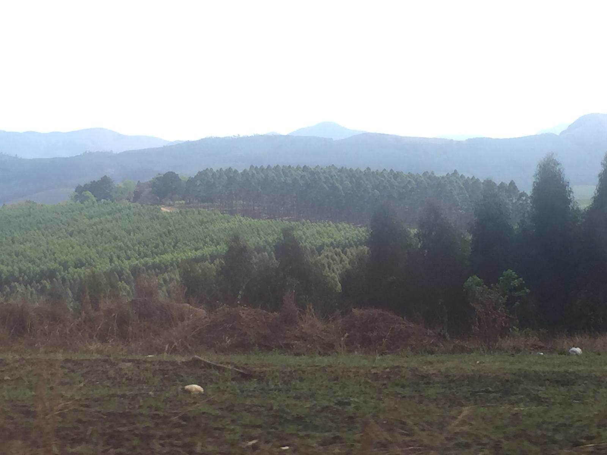
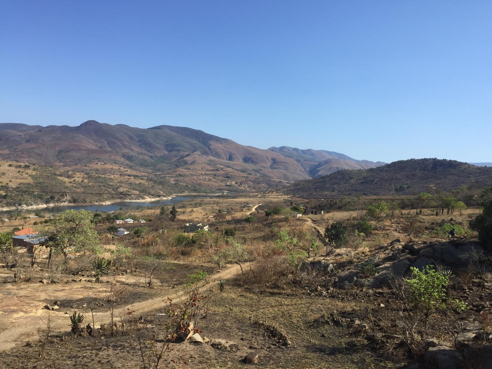
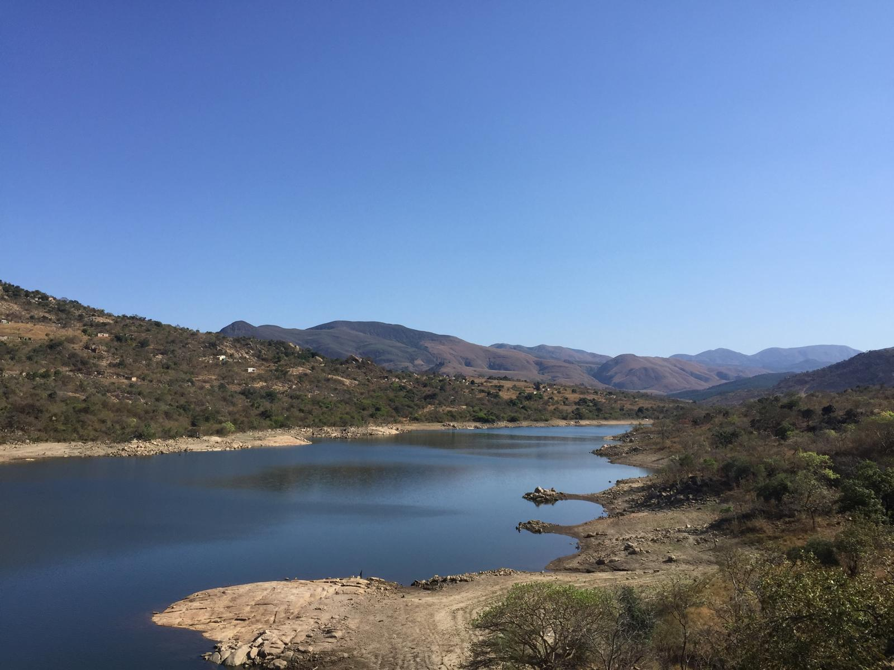
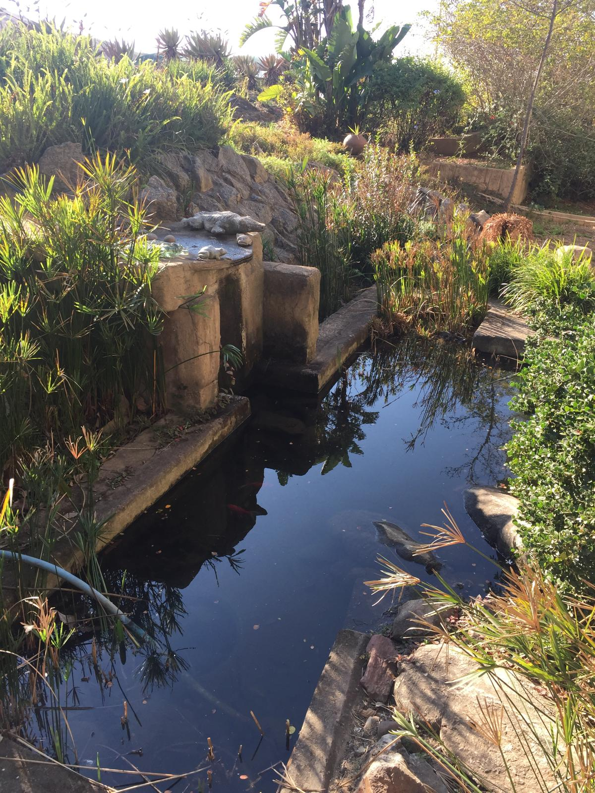
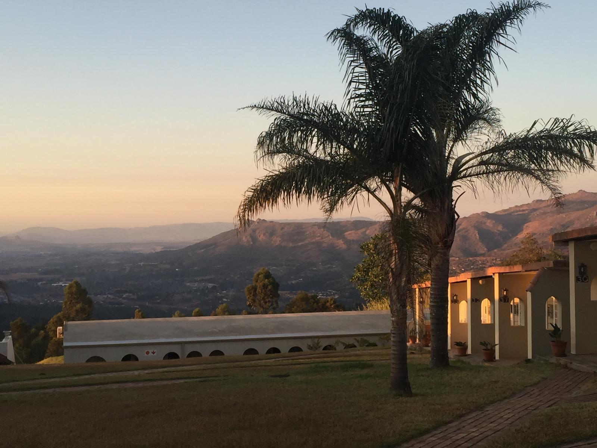
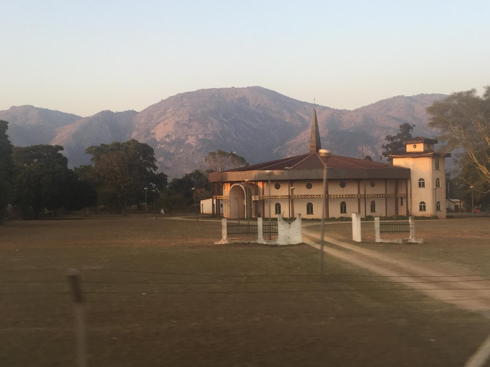
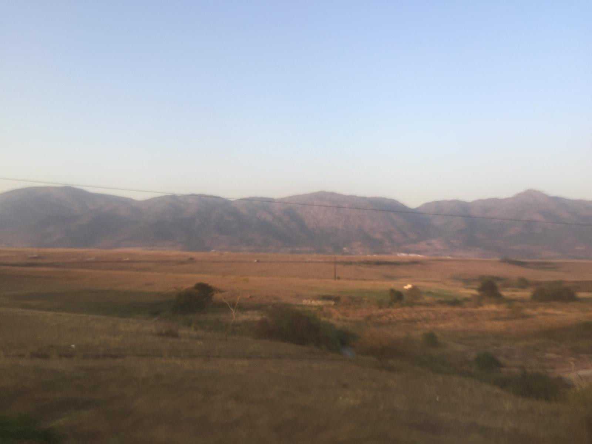
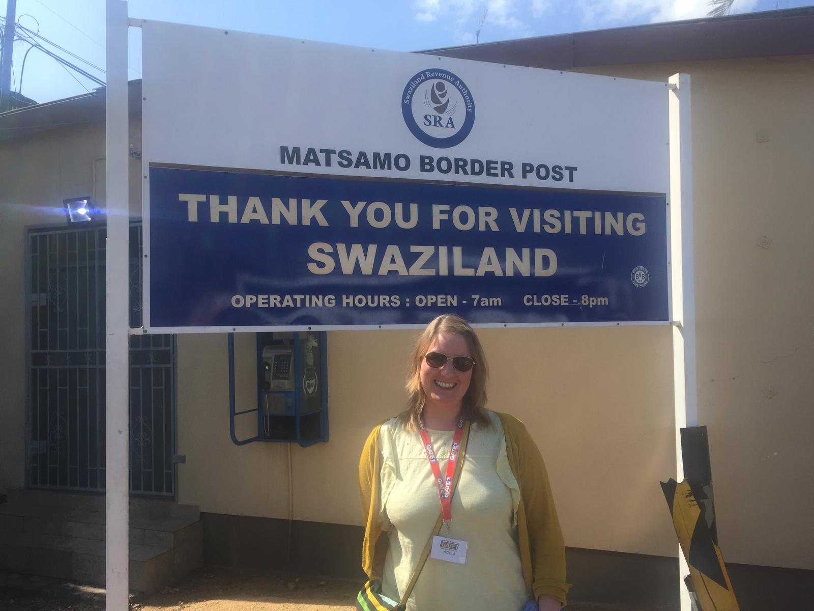

The Kingdom of Eswatini may be one of Africa’s smallest countries, but it deserves far more than a quick stop on a southern Africa itinerary. We travelled through in 2018, when it had only just officially changed its name from Swaziland, and our time there became one of the most memorable parts of the journey. This guide combines the practical country information we wish we had before travelling with our own experience of Mbabane, Swazi culture, community visits and the landscapes of this remarkable little kingdom.
What Eswatini gave us:
Know before you go
Eswatini is a landlocked country in southern Africa, bordered by South Africa on most sides and Mozambique to the northeast. At roughly 17,364 km², it is one of Africa’s smallest countries, yet its scenery changes dramatically from the cooler mountainous Highveld to the warmer, drier Lowveld.
Population figure shown is the official 2025 projection of 1,217,041. The lilangeni is fixed at parity with the South African rand, which is also legal tender in Eswatini.
The modern kingdom has deep roots in Swazi history and the monarchy remains central to the country’s national identity. Eswatini became independent from Britain on 6 September 1968 under King Sobhuza II.
Today the country operates under a system in which the monarchy, traditional structures and parliament all play roles in national government. The 2005 Constitution is the supreme law, while the Tinkhundla system forms the basis of the country’s political and administrative structure.
In April 2018, King Mswati III announced that the country would officially be known as the Kingdom of Eswatini rather than Swaziland. The name means, broadly, “land of the Swazis” and marked a return to the country’s indigenous name. We happened to visit in 2018, so it was a particularly interesting time to be there — you will still see the old Swaziland name on older signs, maps and souvenirs.
Traditional ceremonies, music, dance, crafts and community structures remain highly visible parts of life in Eswatini. For visitors, understanding that these traditions are part of a living contemporary society — rather than simply tourist attractions — makes travelling here far more rewarding.
Travel rules can change. Check current entry, health and border requirements with official sources before departure.
A small kingdom with a very big heart
We crossed into Eswatini from South Africa in 2018 with one night planned in Mbabane and a loose itinerary for the following day. What unfolded over those two days ended up being among the most memorable of our entire African adventure.
Mbabane is a small capital city set in the beautiful Mdimba Mountains — unhurried, friendly and genuinely charming in a way that big cities rarely are. The markets, the local restaurants, the mountain setting and the warmth of the people we met made an immediate impression.
Our cultural visit was extraordinary. We were introduced to aspects of Swazi traditions, crafts, music and community life by local people who generously shared their knowledge with us. Looking back, what mattered most was not treating the experience as a performance or a photo opportunity, but listening, asking questions respectfully and appreciating that we were visitors being welcomed into someone else’s community.
But nothing prepared us for the primary school visit. The children were incredible. The joy, the curiosity, the energy, the warmth they showed to two Irish people turning up in their school — it was one of those moments in travel that strips everything back and reminds you what actually matters. We left with full hearts and a perspective on our own lives that we have never quite lost.
Eswatini is small. It is landlocked. It is not on most travel bucket lists. It absolutely should be.
The single most moving experience of our entire southern Africa trip. The children, the welcome, the joy — it is the kind of travel moment that stays with you for life and changes how you see the world.
A chance to learn about Swazi traditions, crafts, music and community life directly from local hosts. It was memorable because of the conversations and welcome, not because it tried to turn everyday life into a tourist spectacle.
A small, charming capital in the mountains — relaxed, friendly and full of character. The markets are great, the food is good and the setting in the Mdimba Mountains is genuinely beautiful.
Eswatini's scenery moves from green highland mountains to open savanna lowlands and is beautiful throughout. The views driving through the country are stunning at every turn.
The Swazi people are among the warmest and most welcoming we have encountered anywhere in Africa. The hospitality, the openness and the genuine friendliness made every interaction a pleasure.
Most travellers in southern Africa drive straight past. Eswatini rewards those who stop — with culture, scenery and human connection you simply will not find anywhere else on the route.
Want to see more of Eswatini beyond our own visit? Drive From Home lets you virtually explore the Mbabane and Manzini area — a great way to get a feel for the streets, scenery and everyday surroundings of this fascinating little kingdom before you travel.
From the misty highlands and open lowlands to the reservoir, the traditional homestead and the sign that welcomed us — Eswatini through our lens.








The landscapes, the culture and the people of this remarkable little kingdom.
If Eswatini is part of a wider southern Africa trip, you may also be comparing organised South Africa itineraries. This is a current TourRadar option we’ve selected as a useful starting point — it is not the exact 2018 itinerary we travelled.
Our own journey combined South Africa and Eswatini, but itineraries vary enormously. Always check the individual tour route carefully if Eswatini is a must-see for you.
Disclosure: This is an affiliate link. If you book through it we may earn a small commission at no extra cost to you.
From cultural village visits and guided Mbabane tours to nature reserves and southern Africa day trips — browse Eswatini activities here:
Disclosure: If you book through these links we may earn a small commission at no extra cost to you.
Common questions
What to pack for Eswatini
Eswatini is warm and sunny — lightweight clothing, strong sun protection and insect repellent are the essentials. If your itinerary includes a school or community visit, ask the organiser in advance whether anything is genuinely needed rather than arriving with unsolicited gifts.
Handy for navigation across Eswatini and South Africa — keeps you connected on a multi-country road trip without expensive roaming charges.
View on Amazon →Eswatini uses Type M plugs — the same as South Africa. A universal adaptor is essential for keeping all your devices charged throughout the trip.
View on Amazon →Eswatini's landscapes and cultural encounters are endlessly photogenic — keep a power bank charged so your phone never dies at the wrong moment.
View on Amazon →Ideal for village visits — carry water, sun cream, layers for highland evenings and anything else you need without weighing yourself down.
View on Amazon →Stay hydrated in the African heat — particularly on village visits and outdoor days where you'll be active in the sun for long periods.
View on Amazon →Essential for a southern Africa trip — for minor scrapes, blisters and anything that comes up on a long multi-country road trip far from home.
View on Amazon →Essential for Eswatini — malaria is present in the lowveld areas so a good repellent is non-negotiable. Check with your doctor about anti-malarial precautions before travelling.
View on Amazon →The African sun is fierce — a high SPF is essential for any outdoor day in Eswatini. Reapply frequently on highland walks and open savanna days.
View on Amazon →Absolutely essential in the African sun — keeps you comfortable and protected on village visits, outdoor walks and any time you are spending significant hours outdoors.
View on Amazon →Lightweight and respectful for village and community visits — covering up is appreciated in traditional Swazi settings and linen keeps you cool while showing respect.
View on Amazon →Disclosure: These are Amazon affiliate links. If you buy through them we may earn a small commission at no extra cost to you.
Don't drive past. Stop, stay a night, spend time with the people and the culture of this extraordinary little kingdom. Eswatini will give you something that no big-ticket destination ever quite manages — genuine human connection and a perspective on the world you won't find anywhere else.
Affiliate disclosure: if you book through our links we may earn a small commission at no cost to you.